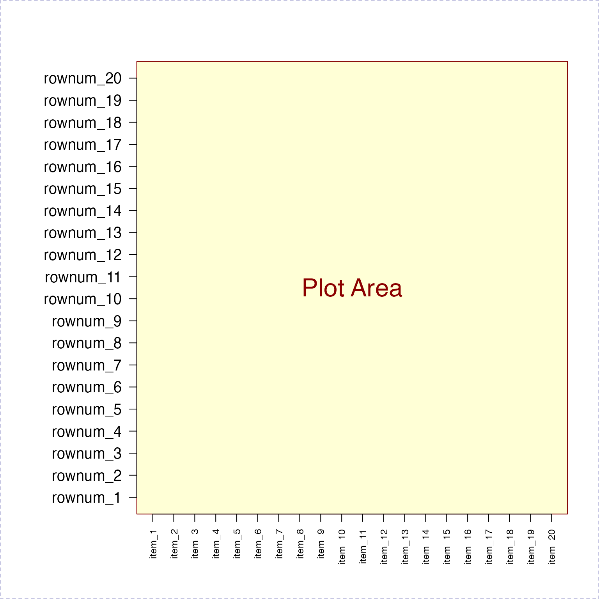
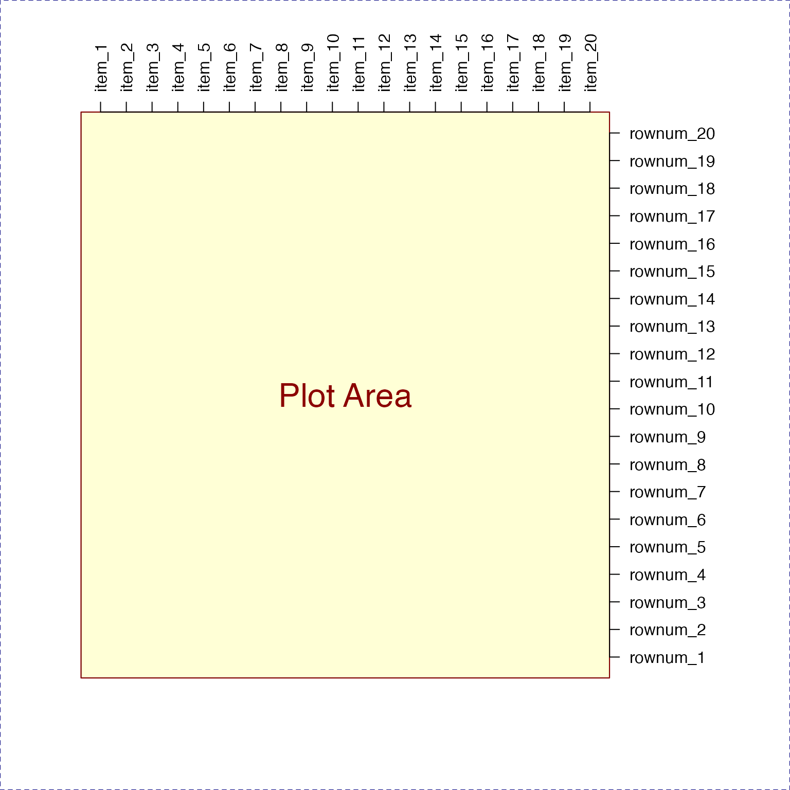

R/jamba-plots.r
Adjust axis label margins
adjustAxisLabelMargins(x, margin = 1, maxFig = 1/2, cex = NULL, prefix = "-- -- ", ...)
| x | vector of axis labels |
|---|---|
| margin | single integer value indicating which margin to adjust,
using the order by |
| maxFig | fraction less than 1, indicating the maximum size of margin relative to the figure size. Setting margins too large results in an error otherwise. |
| cex | numeric or NULL, sent to |
| prefix | character string used to add whitespace around the axis label. |
| ... | additional parameters are ignored. |
This function takes a vector of axis labels, and the margin where they
will be used, and adjusts the relevant axis margin to accomodate the
label size, up to a maximum fraction of the figure size as defined by
maxFig. It currently assumes labels are placed perpendicular to
the axis, e.g. las=2 when using text.
Note this function does not render labels in the figure.
xlabs <- paste0("item_", (1:20)); ylabs <- paste0("rownum_", (1:20)); adjustAxisLabelMargins(xlabs, 1); adjustAxisLabelMargins(ylabs, 2); nullPlot(xlim=c(1,20), ylim=c(1,20), doMargins=FALSE);axis(1, at=1:20, labels=xlabs, las=2);axis(2, at=1:20, labels=ylabs, las=2);par("mar"=c(5,4,4,2)); adjustAxisLabelMargins(xlabs, 3); adjustAxisLabelMargins(ylabs, 4); nullPlot(xlim=c(1,20), ylim=c(1,20), doMargins=FALSE);axis(3, at=1:20, labels=xlabs, las=2);axis(4, at=1:20, labels=ylabs, las=2);